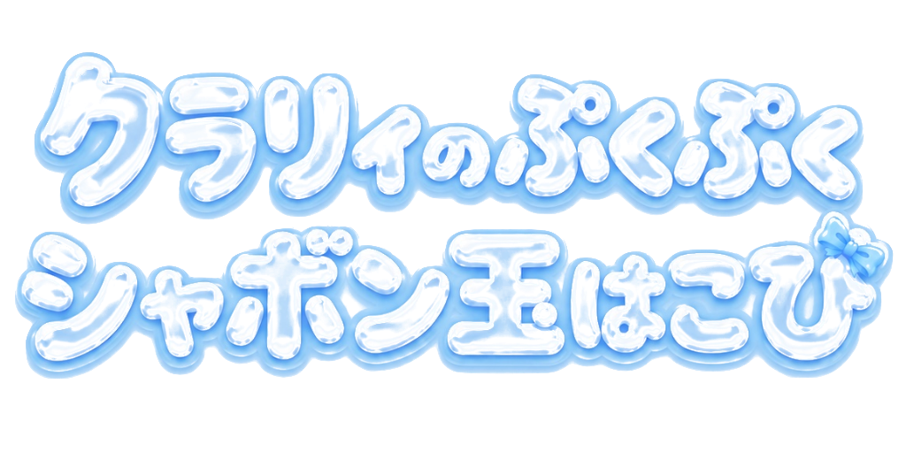
Release Specification / Ver1.4.0クラリィのぷくぷくシャボン玉はこび 仕様書
Ver1.4.0 は、そばにいるだけだったクラゲが「間に合わない一球」を助けてくれるところまで進化したリリースです。 海の光を時刻スライダーで連続的に選べる操作、GameSceneのクラリィの髪揺れも加え、遊びやすさと水中の生命感を磨きました。
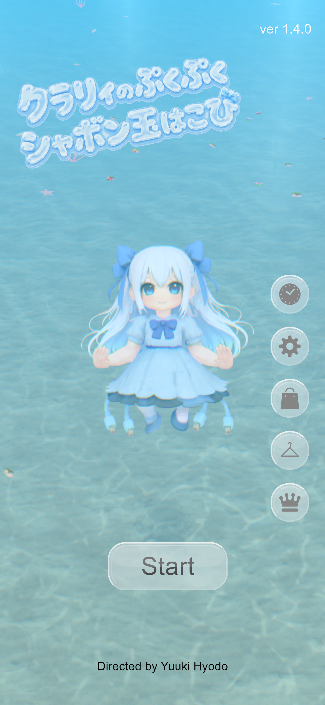
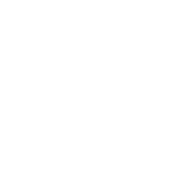
ゲーム概要
基本体験
プレイヤーはクラリィを操作し、頭の判定エリアでシャボン玉を弾いてスコアや距離を伸ばします。 操作はシンプルですが、ヒット音、破裂音、端末振動、Bubbleのぷにょ変形、海中演出により「触って気持ちいい」反応を重ねています。
- 頭の中心に近いほど高得点・高精度。
- Normal / Time Attack / Center Hit の3モード。
- 落下・時間切れ・規定ヒットでリザルトへ遷移。
作業用体験
Clock Mode / Pomodoro / Timer は、海中の美しさとクラリィのかわいい動きを活かした「眺めるゲーム」機能です。 Ver1.4ではプリセット式だった海時間を連続スライダーへ更新し、勉強・作業・休憩の背景として好みの光を細かく選べるようになりました。
- タイトルは実時刻・季節に連動する海を表示可能。
- 設定/ポーズから4:30〜24:00を15分刻みで選択。
- クラゲコンパニオンは癒やしに加え、1プレイ最大2回まで落下を救助。
- ゲーム中の髪が移動・停止・旋回へ控えめに遅れて、ふわっと揺れる。
- 正式名称
- クラリィのぷくぷくシャボン玉はこび / Bubble Pop
- ジャンル
- 海中カジュアルアクション、チル作業用ゲーム、時計/ポモドーロ/タイマー補助
- 対象端末
- iOS 15.0以上 / Android Min SDK 33、Target SDK 36。
- 現行バージョン
bundleVersion: 1.4.0/ iOS1.4.0/ Android versionCode137- 主な実装方針
- Unity Input System、UI Toolkit、URP、イベント駆動、PlayFabランキング、モバイル触覚フィードバック。
Ver1.4.0 リリース差分
Ver1.4.0 の中心は「クラゲが実際に助けてくれる体験」です。 1.3で追加したクラゲと24時間の海を遊びへ接続し、GameSceneのクラリィにもタイトル画面らしい髪の生命感を持たせるマイナーアップデートです。
| 区分 | 内容 | 主な実装 |
|---|---|---|
| 新規 | クラリィが走っても届かない落下だけをクラゲが判定し、ワープして下から1回弾く身代わりヘディング。 | JellyfishRescueDirector / HeadingBall.RescueBounce() |
| 新規 | ワープの伸縮・粒子演出、救助後の上昇退場、20秒後の補充待ちを追加。 | JellyfishCompanion / JellyfishWarpEffect |
| 新規 | 救助成立位置へ「くらげがひろってくれた！」を約2秒表示するUI Toolkit吹き出し。 | JellyfishRescueHud / Manager |
| 更新 | 海時間の5プリセットタブを「現実/デフォルト」と「カスタム時刻」の2モード＋4:30〜24:00スライダーへ変更。 | SettingsController / PauseController |
| 更新 | 15分刻みの時刻をシーン別保存。1.3までの設定は日中12:00、夕焼け16:45、日没17:30、夜21:00へ自動移行。 | GameSettingsStore |
| 更新 | カスタム時刻では実際の太陽高度から仰角を求め、昼の連続スライドでも影と光が変化。 | OceanTimeOfDayCycle.SolarSunPitch() |
| 新規 | GameSceneのクラリィへ軽量な髪物理を自動付与。移動・停止・旋回へ遅れて62セグメントを固定60Hzで更新。 | ClarieHairMotion / ClarieHairChains |
| 調整 | Normalでクラゲが増える距離を20 / 55 / 120 / 260mへ再調整し、登場間隔を広げた。 | Game_Normal_Endless.unity |
画面・素材ギャラリー
Titleから作業用モード、衣装、ランキング、モード選択、各ゲーム画面、リザルト、設定、ストアへ進む従来の並び順を維持した代表ギャラリーです。 Ver1.4で追加したクラゲ救助とゲーム中の髪のカットは、既存画面の流れを崩さないよう最後に配置しています。
10:30の明るい海でUnity Game Viewを再収録。1.4.0表記とホーム導線を確認。
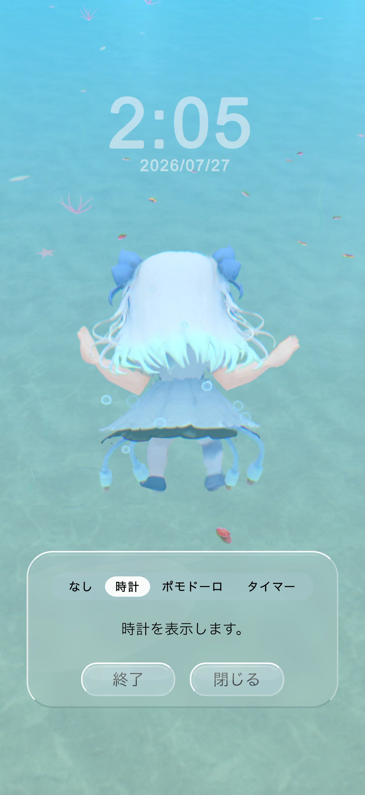
Clock / Pomodoro / Timer時計、ポモドーロ、タイマーを切り替える作業用モード。
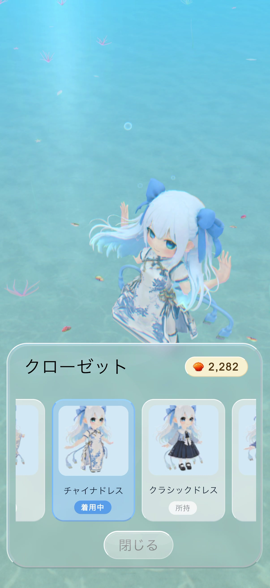
Closet貝がら残高と衣装カードを表示し、クラリィの衣装を切り替え。
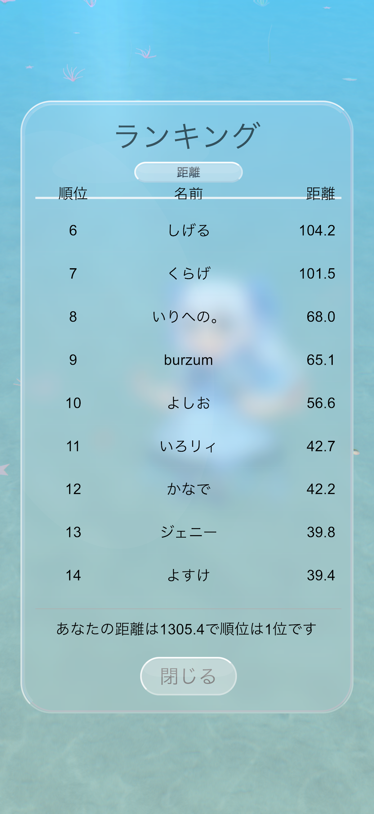
Ranking距離ランキングと自分の順位を表示。実機ではPlayFab名簿を確認。
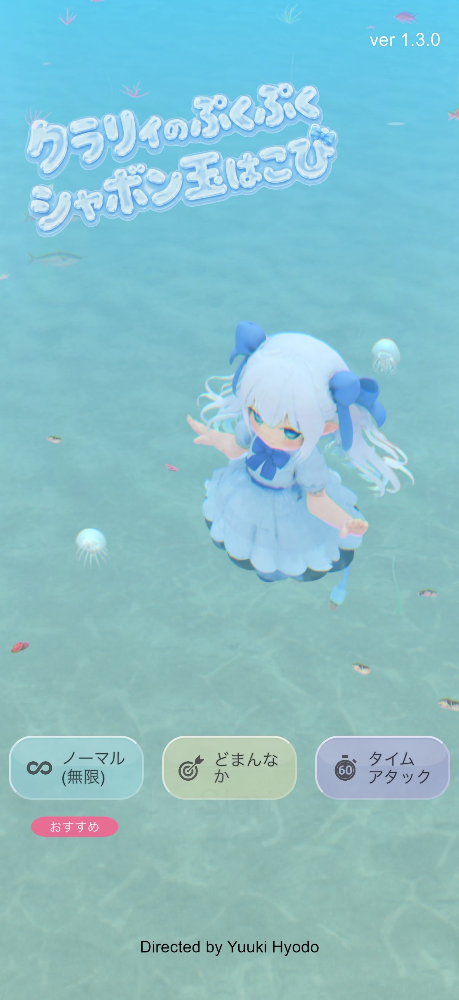
Mode SelectNormal、どまんなか、タイムアタックの3モードをタイトル下部から選択。
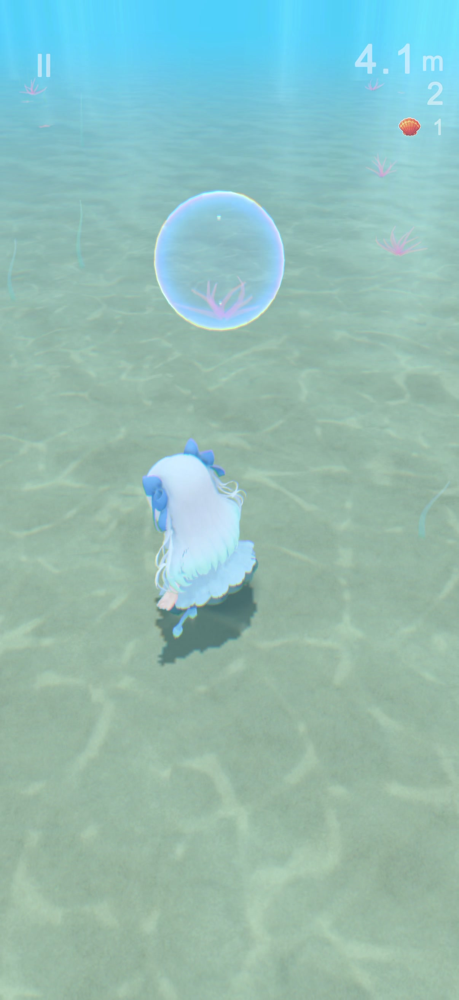
NormalゲームシーンでBubbleを弾く通常プレイ。バブル、クラリィ、距離、ヒット数、貝がらHUDを表示。
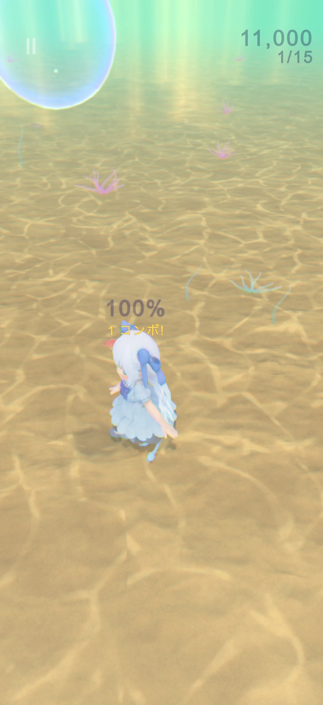
Center Hit15回制の中心ヒット。命中率、スコア、ヒット回数を表示。
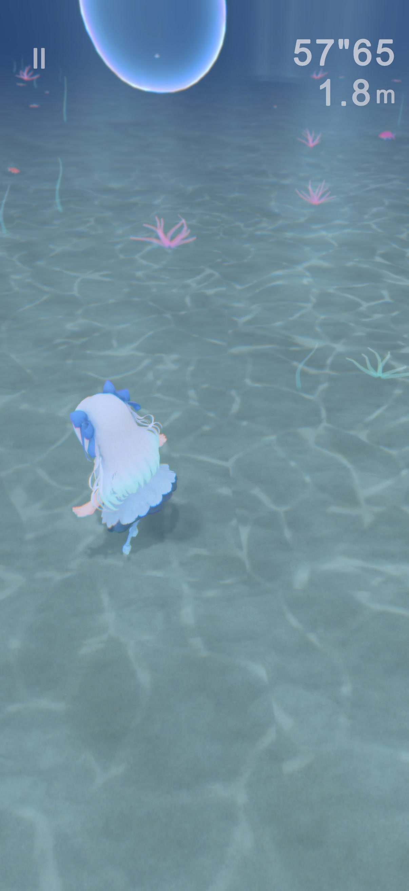
Time Attack60秒制の距離チャレンジ。タイマー、距離、夜の海時間HUDを表示。
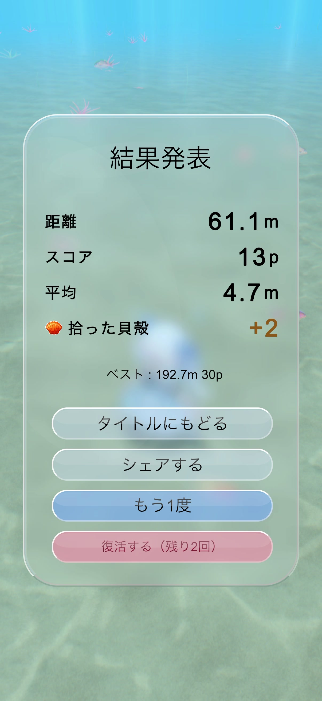
Result距離、スコア、平均、拾った貝がら、復活/再試行/シェア導線。
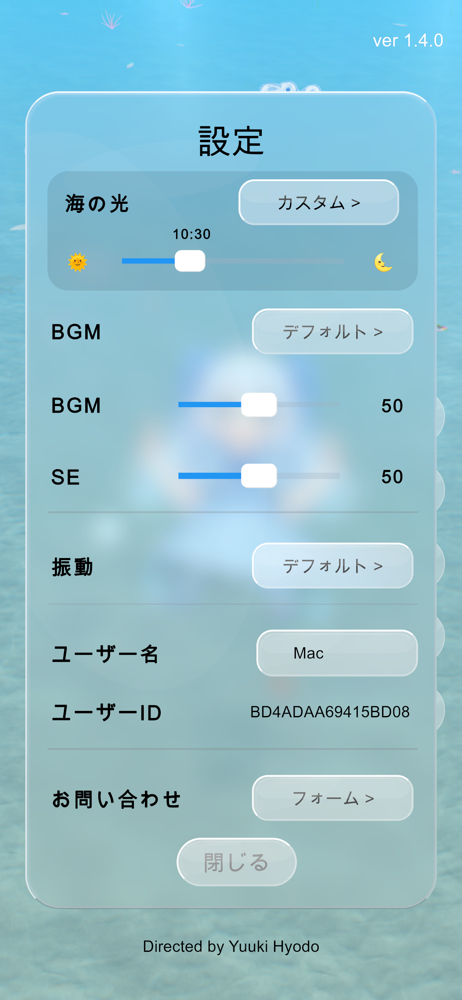
Settings / Ocean Light Slider従来のSettings位置を1.4の画面へ差し替え。「カスタム」と10:30の時刻表示を確認。
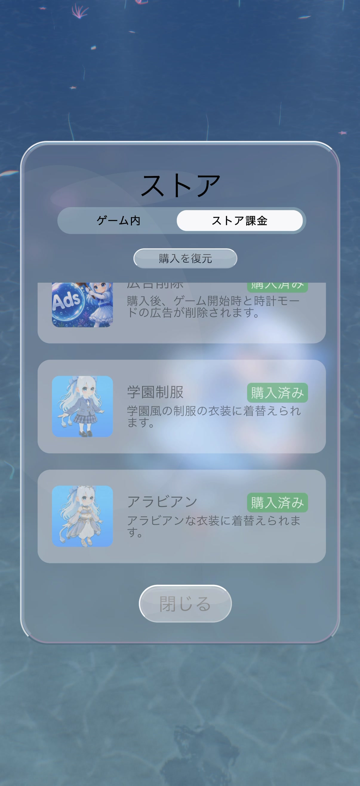
Storeゲーム内/ストア課金タブ、広告削除・衣装購入・購入復元。
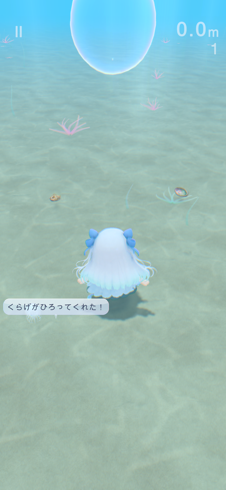
Ver1.4 / Jellyfish Rescue & Game Hair1.4の追加カット。救助メッセージとクラゲ、GameSceneでふわっと動く後ろ髪を収録。
ゲームモード
Normal Endless
Bubbleを落とすまで続く基本モード。距離、ヒット回数、命中率、スコアを伸ばす。海時間の既定は 日中。
- スコア、総移動距離、最大/平均精度を記録。
- 同じ位置での放置連続ヒットはコンボガードで抑制。
- 落下/破裂でリザルトへ移行。
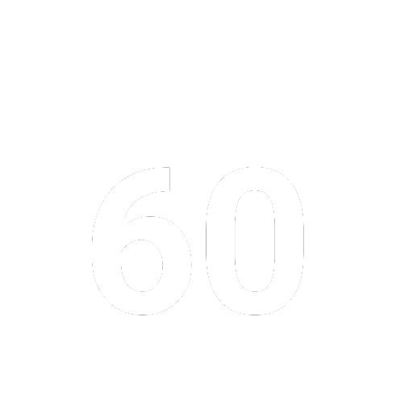
Time Attack
60秒でどれだけ距離とスコアを伸ばせるかを競う短時間モード。海時間の既定は 夜。
- 時間切れまたは落下で終了。
- テンポ重視。ランキング/シェアとの相性が高い。
- ポーズ画面から海の光をカスタム時刻へ即時変更可能。
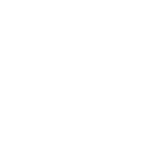
Center Hit
15回のヘディングで中心精度を競う採点モード。海時間の既定は 夕焼け。
- 中心ほど高得点。端でも最低命中率を保証。
- 連続高精度でコンボ倍率が上昇。
- Bubbleの水平移動はランダム方向で、中心狙いを成立させる。
Bubble 挙動 / 当たり判定 / Shader 詳解
Bubble は HeadingBall の物理、BubbleEffect のヒット変形、
BubbleShader の透明膜、BubbleBurst の破裂演出で構成されます。
Ver1.4でも中核ロジックは維持されています。
通常モードの跳ね返り
- Bubble が
HeadingZoneに衝突する。 - 頭ローカル座標へ変換し、中心からの
offsetを求める。 centerThreshold内は真上、外側は衝突方向へSlerpして角度を付ける。targetHeightYと滞空倍率から垂直初速・カスタム重力を計算。- 水平速度を更新し、Bubble の
linearVelocityへ反映。
放置コンボ防止
Normal / TimeAttack では、前回とほぼ同じ頭ローカル位置で連続ヒットした場合に
comboGuardDistance と comboGuardMaxRepeats で放置判定します。
閾値を超えると命中率を0にし、ランダム水平ナッジでループを崩します。
Center Hit は毎回ランダム方向へ飛ばすため、同じ位置での放置ループが成立しにくい設計です。
当たり判定と命中率
| 項目 | 通常 / TimeAttack | Center Hit |
|---|---|---|
| 命中評価 | 中心からの距離でスコア化。精度は色にも反映。 | CenterHitAccuracy(offset)。中心100%、端でも最低保証。 |
| 跳ね返り方向 | 中心は上、外側はヒット方向へ角度をつける。 | 採点と跳ね返りを分離し、毎回ランダム水平方向へ飛ばす。 |
| 二重判定 | 衝突判定と状態管理で抑制。 | centerHitHitCooldown 0.3秒。 |
| 壁反射 | 壁衝突時はステージ内へ戻す。 | 水平方向だけ反射し、テンポを保つ。 |
シャボン玉 Shader
透明膜とFresnel
BaseColor、Alpha、Fresnel を組み合わせ、外縁ほど光る薄膜感を作ります。
命中方向の色は MaterialPropertyBlock 経由で個体へ反映し、共有Materialを汚さない設計です。
ぷにょ変形
BubbleEffect.TriggerHitSquish(finalDir) が衝突方向を渡し、
_SquishProgress を減衰振動として更新します。
Shader は _HitDirection 軸を縮め、直交方向を膨らませます。
| Shader/Material パラメータ | 役割 |
|---|---|
_BaseColor | Bubble本体の薄い色。ヒット色と元色をブレンドする。 |
_FresnelColor | 外縁の発光色。命中方向・反応の気持ちよさを視覚化。 |
_SquishProgress | ヒット直後の変形量。時間経過で0へ戻る。 |
_HitDirection | どの方向へ潰すか。物理反射方向に対応。 |
_Surface / _SrcBlend / _DstBlend | URPの透明描画/アルファブレンド。パーティクルやクラゲMaterialでも手動設定が必要な箇所あり。 |
Ver1.4 海の光スライダー / 24時間サイクル
OceanTimeOfDayCycle は時間帯Profileをキーフレームとして並べ、現在時刻に応じて海の色・フォグ・ライト・HUD・魚の見え方を滑らかに補間します。
Ver1.4では同じカーブをユーザーが時刻スライダーで直接たどれるようになりました。タイトルは実時刻、ゲームシーンは各モードの既定Profileを「デフォルト」として維持します。
5つの時間帯タブを、時刻そのものを選ぶUIへ変更
上段のモードボタンで 現実時刻（ゲーム中はデフォルト） と カスタム を切り替えます。
カスタム時だけ太陽〜月のスライダーが有効になり、つまみの上へ 10:30 のような確定時刻を表示します。
| 入力範囲 | 4:30〜24:00 |
|---|---|
| 確定刻み | 0.25h = 15分、全79段階 |
| ライブ反映 | ドラッグ中も海・フォグ・光源・HUD・魚を即時プレビュー |
| 保存単位 | Title / Normal / Time Attack / Center Hitの4スロット |
白み始め前
日の出
昼プラトー
夕方
日没
夜
時刻ソース
| RealTime | 端末の DateTime.Now と実日付。タイトル向け。 |
|---|---|
| Fixed | _fixedProfile を常時適用。ゲーム3シーン向け。 |
| Manual | _debugHour スライダー。調整・プレビュー用。 |
| Custom | 設定/ポーズの時刻スライダー。共有Profileから24時間カーブを組み、指定時刻で固定。 |
季節モデル
愛媛県伊予市/松山相当の値をもとに、夏至と冬至の日の出・日の入りをcosで補間します。 Fixedモードでは安定したゲーム画面を優先し、季節係数は0.5で固定します。
| 夏至 | 日の出 4:58 / 日の入り 19:23 |
|---|---|
| 冬至 | 日の出 7:10 / 日の入り 17:05 |
既定キーフレーム
| # | Profile | 基準 | Offset | 意味 |
|---|---|---|---|---|
| 1 | Night | Sunrise | -0.5h | 日の出30分前、白み始め。 |
| 2 | Dawn | Sunrise | 0h | 夜明けのピーク。 |
| 3 | Day | Sunrise | +1.5h | 完全な昼へ。 |
| 4 | Day | Sunset | -2.5h | 昼プラトー終わり。 |
| 5 | GoldenSunset | Sunset | -1.5h | ゴールデンアワー。 |
| 6 | Sunset | Sunset | -0.75h | 夕焼け・薄明。 |
| 7 | Night | Sunset | +0.5h | 完全な夜。 |
soft-only 適用
ランタイムでは OceanUnderwaterSettings.ApplySoftTo() を使い、色・強度・フォグなど軽量な値だけを反映します。
最後に ApplyExternalEnvironmentChanges(false) を呼び、光柱・粒子・カースティクスの再生成を避けます。
カースティクス配置保護
TitleとGameではTerrain高さが異なります。共有Profileが groundY を上書きすると光模様が床下へ潜るため、
applyCausticsPlacement がONのときだけ配置を適用します。
設定 / ポーズの「海の光」セレクタ
スライダーの仕組み
UI Toolkitの標準Sliderではなく、既存のLiquid Glass意匠を保つ VisualElement として実装しています。
SettingsとPauseは同じ入力アルゴリズムを持ち、違うのは保存先のシーンスロットだけです。
PointerDown でCaptureし、画面外へ指が出てもドラッグを継続します。
左右の操作余白を除いた幅で localPosition.x を正規化します。
Lerp(4.5, 24, n) で4:30〜24:00の生時刻を求めます。
Round(hour / 0.25) × 0.25。範囲外はClampし、変化した段だけ通知します。
OnOceanTimeOfDayChanged を受けたCycleが ApplyNow() し、海を即時更新します。
PointerUp / PointerCaptureOut の1回だけ PlayerPrefs.Save() を呼びます。
| シーン | モードOFF時 | カスタム時刻キー | UI導線 |
|---|---|---|---|
| Title | 現実時刻＋季節 | settings_ocean_custom_hour_title | 設定画面 |
| NormalEndless | Day | settings_ocean_custom_hour_normal | ポーズ画面 |
| TimeAttack | Night | settings_ocean_custom_hour_timeattack | ポーズ画面 |
| CenterHit | GoldenSunset | settings_ocean_custom_hour_centerhit | ポーズ画面 |
連続操作
- 範囲は
4:30〜24:00、刻みは15分。 - ドラッグ中は
persist:falseで即時プレビューし、指を離したときだけPlayerPrefs.Save()。 - カスタム時刻では太陽仰角を伊予市相当のモデルから再計算。昼のプラトー内でも光と影が変わる。
1.3設定の移行
旧5タブは初回参照時に自動移行します。日中→12:00、夕焼け→16:45、日没→17:30、夜→21:00。現実はそのまま現実/デフォルトとして保持します。
Directional Lightはどう傾くか
カスタム時刻では、Profileの色補間とは別に太陽高度を計算し、主光源の X回転だけ を更新します。
Quaternion.Euler(sunPitch, 0, 0) なので、朝から昼は光が上から差す方向へ深く傾き、午後は逆順で浅くなります。
Y（方位）とZ（ロール）は常に0で、東から西へ横切る方位回転は行いません。
seasonT = 0.5（日の出6:04 / 日の入り18:14）で算出。太陽高度からX回転を求める
緯度は伊予市/松山相当の φ = 33.76°。季節モデルの日の出・日の入りから赤緯δを逆算し、選択時刻の太陽高度eを求めます。
赤緯を独立した天文データから持たず、既存の季節別日長と整合するよう日の出時の高度0°から逆算します。
代表時刻の傾き
| 時刻 | 太陽高度e | 適用するX回転 |
|---|---|---|
| 4:30 | -19.3° | Nightの作り込み角度 |
| 8:00 | 23.8° | 28.0°（下限） |
| 10:30 | 50.5° | 50.5° |
| 12:09 | 58.0° | 58.0° |
| 14:00 | 48.8° | 48.8° |
| 16:45 | 18.4° | 28.0°（下限） |
| 18:14 | 0.0° | Profile角度75%＋28°を25% |
| 21:00 | -33.1° | Nightの作り込み角度 |
28°の下限
太陽が低い朝夕に光を水平近くまで倒すと影が極端に長くなるため、日中として扱う区間はX回転を28°以上に保ちます。10:30〜14:00付近は実際の太陽高度をそのまま使います。
地平線付近はProfileへ戻す
太陽高度が-2°以下ならプリセット角度、-2〜6°はプリセットから計算角へ滑らかに移行します。Dawn / Sunset / Nightの作り込んだ見え方を壊さず昼の連続変化だけを足します。
非カスタム時: Titleの現実時刻、および各ゲームモードのデフォルトでは solarHour < 0 のため、この実高度補正は行わずProfileの光源角度を使用します。
実高度による連続X回転は、ユーザーが「カスタム」を選んだときだけ有効です。
Ver1.4 クラゲコンパニオン救助
クラゲは普段クラリィの周囲を静かに漂い、クラリィが走っても確実に届かない落下だけを引き受けます。 助けると決めたら縦に伸びて消え、バブルの下へ現れて真上へ弾き、役目を終えた1匹は上方へ去ります。
登場と回数制限
| 時間スケジュール | 15, 45, 180, 600秒。タイトルでは15秒で1匹、45秒で2匹、3分で3匹、10分で4匹。 |
|---|---|
| Normal距離 | 20, 55, 120, 260m。"Bubble"タグの移動距離で順に増える。 |
| 救助上限 | 1プレイ maxRescuesPerPlay = 2 回。無限救済を防ぐ。 |
| 補充待ち | 救助した1匹が去ってから rescueReturnDelay = 20 秒後に補充可能。 |
発動条件
| 残り時間 | 低い迎撃点まで概ね 1.2秒以内になってから判定。 |
|---|---|
| 届かない判定 | 反応時間0.22秒と走行可能距離を見積もり、さらに0.7m以上不足する場合だけ。 |
| 画面内 | rescueRequireOnScreen が既定ON。見えない場所で勝手に救わない。 |
| 迎撃高さ | 足元から0.85m。バブル半径0.635mを考慮した地面すれすれの高さ。 |
1回の救助フロー
普段はそばで漂う→ WarpOut
縦に伸びて消える→ WarpIn / Rescuing
下から浮上→ RescueBounce
真上へ立て直す→ Leaving
上方へ退場
プレイを横取りしない
- 落下地点を追い回すエスコート機能は実装を残しつつ既定OFF。
- クラリィの反応時間・現在速度・最高速度から「まだ間に合う」場面は見送る。
- 救助後は水平速度を0にして真上へ弾き、次の一球を自分で追える時間を作る。
RescueBounce()も通常のOnHeadingを通るため、スコア・SE・振動・難易度更新は共通。
演出と成立保証
- 泳いで横断せず、
WarpOut → WarpInの伸縮と粒子で救助地点へ移動。 - 残り時間が短い場合はワープ時間を比率維持のまま短縮。
- 一度引き受けた救助は、落下寸前なら迎撃点へ寄せて成立を優先。
- 成立位置へUI Toolkitの吹き出しを約2秒表示し、何が起きたかを明示。
GameSceneのクラリィ髪モーション
TitleのUnityChan SpringBoneと同じ先端Verlet・長さ拘束・回転合成を、ゲーム本編向けの軽量ドライバ1個にまとめました。 走り出し、停止、旋回に毛先が少し遅れて追従し、従来の固定的な髪へ控えめなふわっと感を加えます。
自動セットアップ
RuntimeInitializeOnLoadMethodとManagerの二重保証で、PlayerControllerを持つクラリィへ自動追加。- Title / NameRegisterには追加せず、既存の
SpringBoneがあるモデルも必ずスキップ。 - TitleとGameで12本のチェーン定義を
ClarieHairChainsから共有。
軽量化と安全補正
- 62セグメントを1コンポーネントでまとめ、固定60Hzで更新。
- 身体コライダーとの最大約800距離判定/フレームを省略。
- 移動93%・旋回35%を仮想先端へ継承し、残りを柔らかな遅れとして使う。
- 最大偏角42°、0.6秒のソフトスタート、1.5m以上の瞬間移動で履歴リセット。
| 項目 | 既定値 | 役割 |
|---|---|---|
stiffnessForce / dragForce | 0.015 / 0.9 | Title互換の戻る力と減衰。 |
dynamicRatio / motionScale | 0.7 / 0.81 | 計算結果の最終反映率。ゲームでは揺れ幅を控えめにする。 |
strandVariation | 0.08 | 12毛束へ微差をつけ、左右2塊への同期を崩す。 |
outwardForce | 0.00022 | 毛先を頭の外へ保ち、身体側への巻き付きを軽減。 |
inwardBendReduction | 0.3 | 顔・首・胴体側へ入る曲がりだけを30%戻す。 |
GameScene版は衣装コライダーを持たないため、全衣装での貫通は目視確認対象です。ヘディング衝撃用の AddImpulse() は拡張点として用意されていますが、Ver1.4時点では未接続です。
搭載機能一覧
ヘディングゲーム
Bubble衝突、スコア、距離、命中率、難易度ランプ、コンボガード、壁反射、破裂。
モード選択
Normal / Time Attack / Center Hit をTitleのカードから選択。
Clock Mode
時計、ポモドーロ、タイマー。作業用・勉強用の眺める体験。
Jellyfish Rescue
時間/距離で増えるクラゲが、確実に届かない落下を1プレイ最大2回まで救助。
Settings
BGM、SE、振動、海の光モードと4:30〜24:00の時刻スライダー。UI Toolkitで構築。
Pause
再開、タイトル復帰、カスタム時刻変更。timeScale=0でも海へ即時反映。
Ranking
PlayFabでランキング取得。未ログイン時はローカル表示。
Store / Ads
リワード広告、バナー、広告削除IAP、購入復元。
出現する魚の種類 / 頻度 / 特徴
FishParticleManager のデフォルト定義は13種です。画像素材が確認できる魚は12種で、
Oyabiccha は定義に存在しますが画像ファイルは今回未確認です。
ほぼ全魚種が avoidCenterArea = true で、プレイヤーとBubbleの通り道を避けます。
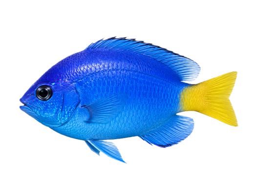
ソラスズメダイ
重み1.5、3〜7匹。青い高頻度差し色。
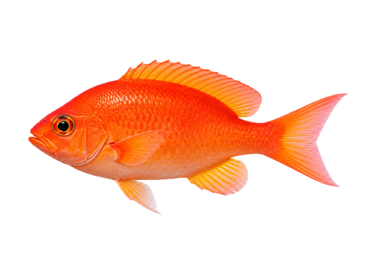
キンギョハナダイ
重み1.5、3〜7匹。暖色アクセント。
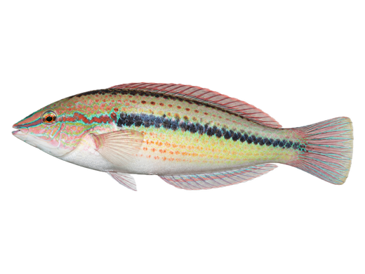
キュウセン
重み0.7、0〜2匹。低めの高さ。
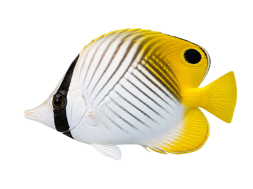
チョウチョウウオ
重み1.2、1〜4匹。Hovering。
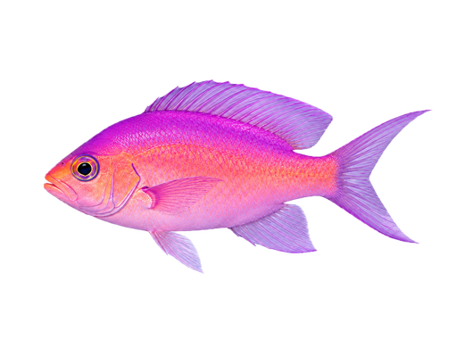
ハナゴイ
重み0.85、2〜4匹。紫ピンク。
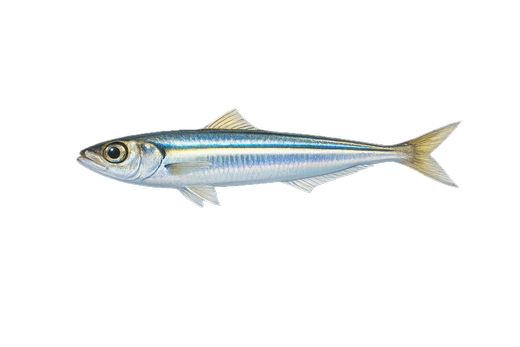
キビナゴ
重み0.8、5〜12匹。速い銀色の流れ。
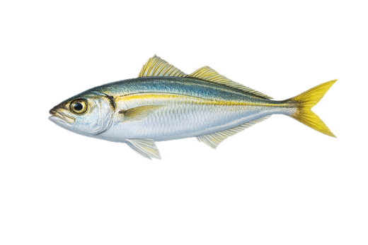
マアジ
重み0.65、2〜5匹。中層回遊。
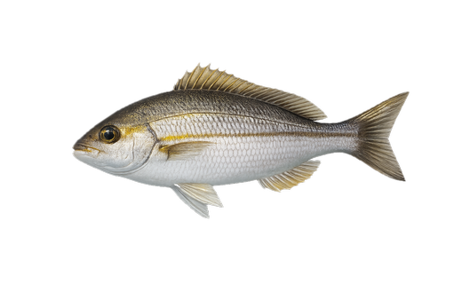
イサキ
重み0.55、1〜3匹。落ち着いた中型魚。
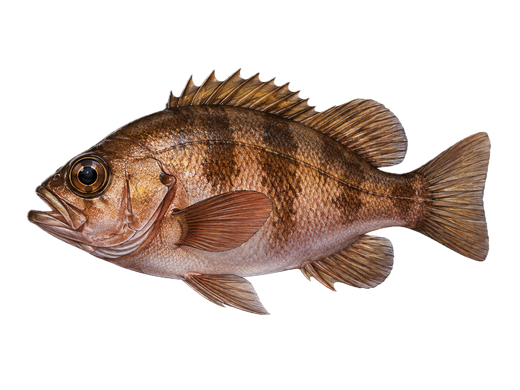
メバル
重み0.5、0〜2匹。海底近くでゆっくり。
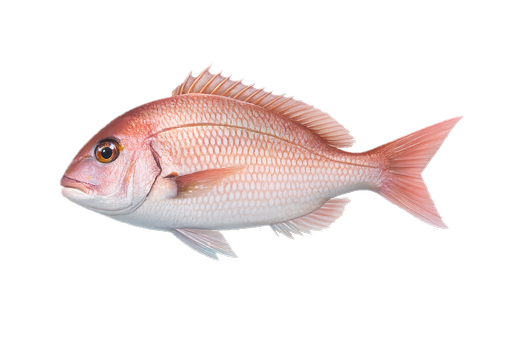
マダイ
重み0.95、1〜2匹。愛媛らしさ。
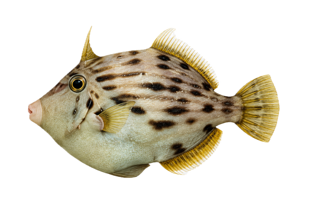
カワハギ
重み0.5、0〜2匹。StopAndGo。
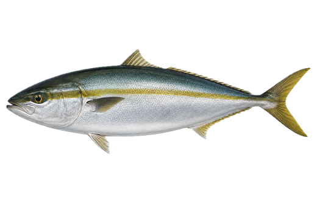
ブリ
重み0.25、0〜1匹。低頻度の見せ場。
| 魚種 | 同時表示 | 出現重み | 群れ | 動き | 特徴 |
|---|---|---|---|---|---|
| Sorasuzumedai | 3〜7 | 1.5 | SmallGroup 2〜5 | GentleWave | 青い差し色。見せ場の多い高頻度枠。 |
| Kingyohanadai | 3〜7 | 1.5 | SmallGroup 2〜5 | GentleWave | オレンジ系。ソラスズメダイ相当の頻度。 |
| Kyusen | 0〜2 | 0.7 | None | GentleWave | 砂地・岩場。低めに出る。 |
| Chouchouuo | 1〜4 | 1.2 | None | Hovering | ふわっと漂う観賞魚枠。 |
| Hanagoi | 2〜4 | 0.85 | SmallGroup 2〜4 | GentleWave | 紫ピンクで色幅を追加。 |
| Oyabiccha | 2〜4 | 0.85 | SmallGroup 2〜3 | GentleWave | 定義あり。画像ファイルは未確認。 |
| Kibinago | 5〜12 | 0.8 | LooseStream 4〜8 | FastStraight | 銀色の小魚の流れ。 |
| Maaji | 2〜5 | 0.65 | LooseStream 2〜4 | FastStraight | 自然なスピード感。 |
| Isaki | 1〜3 | 0.55 | SmallGroup 2 | Straight | 落ち着いた中型魚。 |
| Mebaru | 0〜2 | 0.5 | None | Hovering | 岩場・海底近く。 |
| Madai | 1〜2 | 0.95 | None | Straight | 愛媛らしさの主役魚。奥でも小さくしすぎない。 |
| Kawahagi | 0〜2 | 0.5 | None | StopAndGo | 止まる/動く変化。 |
| Buri | 0〜1 | 0.25 | RareSmallGroup 2〜3 | FastStraight | 低頻度の大型回遊魚。実効重みは背景補正でさらに控えめ。 |
貝がら通貨 / 衣装コレクション
魚図鑑と同じ海のコレクションとして、10種の貝がらを用意しています。貝がらはクラリィの衣装と交換するゲーム内通貨です。 Normal Endlessではフィールドで拾い、Time AttackとCenter Hitではプレイへの集中を優先してリザルト報酬として獲得します。
| モード | フィールド貝がら | 獲得条件 | 報酬 | リザルト表示 |
|---|---|---|---|---|
| Normal Endless | 表示（同時5個） | Playing中に接近して拾得 | 貝がらごとの value（現行は1） | 貝がらアイコン + 「拾った貝がら +N」 |
| Time Attack | 非表示 | 60秒を完走 | 3 + floor(ヒット数 / 10)、最大8 | 貝がらアイコン + 「獲得した貝がら +N」 |
| Center Hit | 非表示 | 15回のヘディングをクリア | 6 + floor(最終スコア / 100,000)、最大10 | 貝がらアイコン + 「クリア報酬 +N」 |
Normalの貝がらはプレイ開始時、または自分で拾った貝がらの20〜35秒後の再出現時だけに現れます。 未取得の貝がらをプレイヤー移動に合わせて再配置しないため、理由のない突然出現を防ぎます。
貝がらの種類一覧
SeashellDecorSetup.shells で一覧管理します。各定義は名称、テクスチャ、価値、出現重み、サイズ補正、色補正を持ち、
現行の10種はすべて価値1・重み1です。
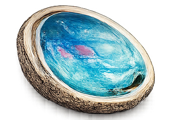
青貝
価値1 / 重み1
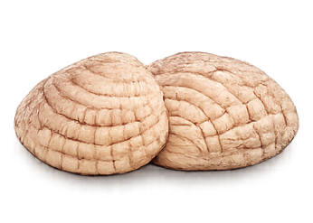
アサリ
価値1 / 重み1
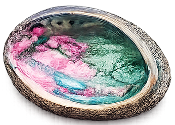
アワビ
価値1 / 重み1
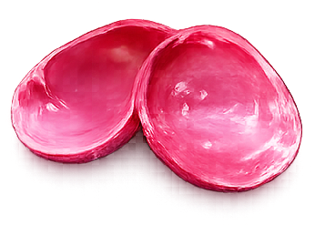
ベニガイ
価値1 / 重み1
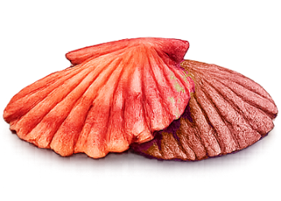
ヒオウギガイ（橙）
価値1 / 重み1
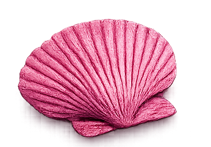
ヒオウギガイ（紫）
価値1 / 重み1
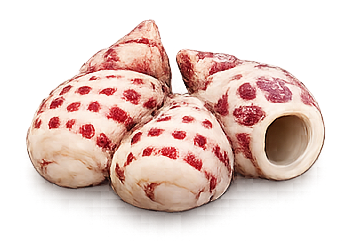
イトカケガイ
価値1 / 重み1
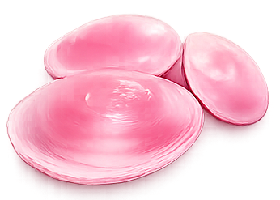
サクラガイ
価値1 / 重み1
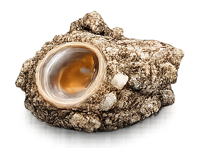
サザエ
価値1 / 重み1
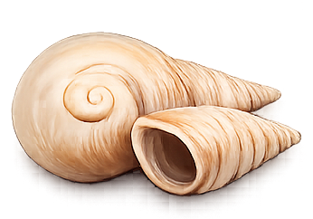
ツメタガイ
価値1 / 重み1
貝がらで手に入る衣装
既定の「いつものワンピース」に加え、集めた貝がらで7着を交換できます。交換後はクローゼットから試着・装備でき、 タイトルとゲーム中のクラリィへ即時反映されます。
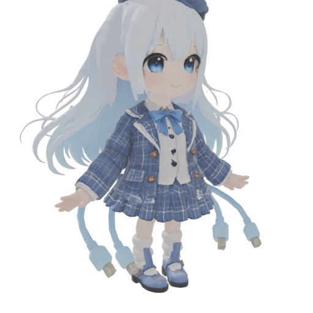
チェックスタイル
20 貝がら
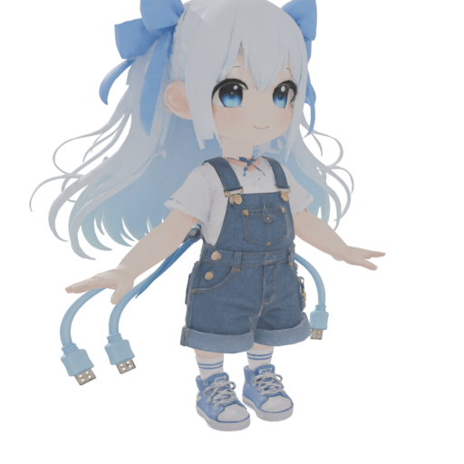
ボーイッシュ
50 貝がら
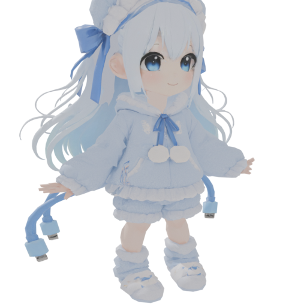
パジャマ
70 貝がら
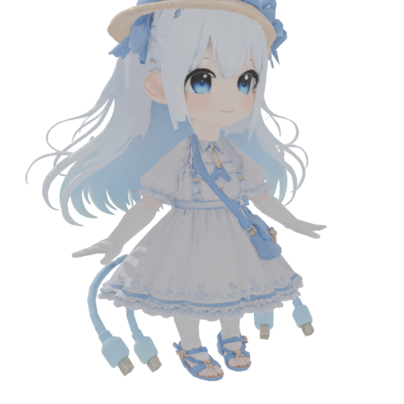
夏ワンピ
120 貝がら
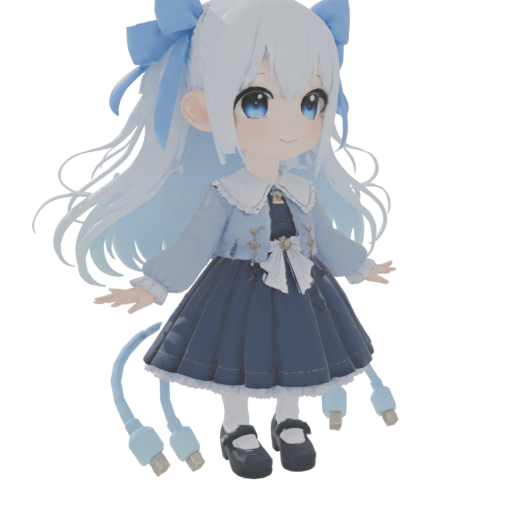
クラシックドレス
200 貝がら
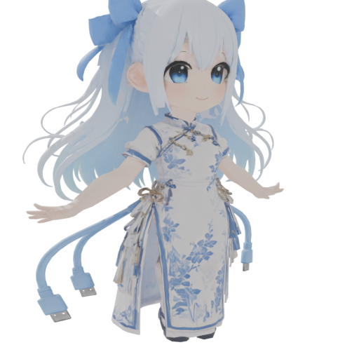
チャイナドレス
300 貝がら
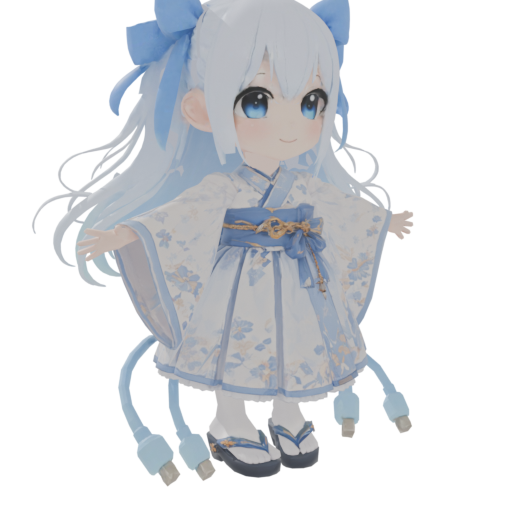
着物
400 貝がら
有料課金で手に入る衣装 / 広告削除
iOSのStore「ストア課金」タブでは、貝がら交換とは別に衣装と広告削除を購入できます。 価格はストアの商品情報を優先して表示し、下記はカタログに設定された表示用の目安です。
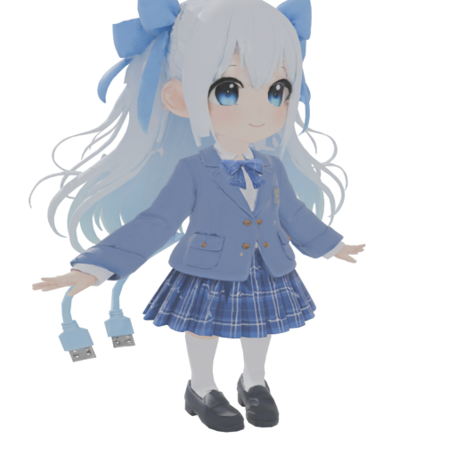
学園制服
目安 $1.00
アラビアン
目安 $2.00
魔法使いの服
目安 $2.00
プリンセス
目安 $2.00
| 商品 | 商品識別子（公開用） | 内容 | 価格 / 復元 |
|---|---|---|---|
| 広告削除 | •••••••• | バナー・インタースティシャル等の広告を削除。 | ストア表示価格 / 非消耗型・購入復元対応 |
| 学園制服、アラビアン、魔法使いの服、プリンセス | •••••••• | 購入後はクローゼットで試着・装備。 | ストア表示価格 / 非消耗型・購入復元対応 |
有料衣装のストア表示はiOS向けの仕様です。Androidでは同じ衣装を貝がら交換として扱い、iOS有料衣装の交換数は基準価格の一律2倍です（学園制服 1,000、アラビアン／魔法使いの服／プリンセス 各2,000貝がら）。
技術仕様
- エンジン
- Unity 6000.5.6f1、Universal Render Pipeline。
- 入力
- Unity Input System。モバイル向けタッチ/仮想入力、プレイヤー移動。
- UI
- UI Toolkit（
UIDocument、UXML、USS）。UGUI Canvasは基本使用しない。 - 描画
- Bubble Shader、URP透明描画、UnderwaterDecorSetup、Renderer Feature、Particle System。
- 水中演出
- カースティクス、光柱、浮遊粒子、スクリーン屈折、深度フォグ、魚群、サメ、救助クラゲ。
- キャラクター
- TitleはUnityChan SpringBone、GameSceneは
ClarieHairMotionの軽量62セグメント髪モーション。 - 保存
- PlayerPrefs。音量/BGM/振動、海の光モード・カスタム時刻、広告削除状態、ローカル統計など。
- オンライン
- PlayFabログイン/ランキング/Statistic送信。未ログイン時はローカルフォールバック。
- 収益化
- AdMobリワード/バナー、IAP広告削除、購入復元。
- ネイティブ
- iOS/Android触覚フィードバック、Store Review、Native Share、iOS表示名ローカライズ。
スクリプト構成
Manager.cs、HeadingBall.cs、PlayerController.cs、PauseController.cs、GameMode.cs。ゲーム進行、Bubble物理、救助通知、入力、ポーズ、モード/海時間シーン区分。SettingsController.cs、GameSettingsStore.cs、JellyfishRescueHud.cs、UXML/USS。音量・振動・海の光スライダー・救助吹き出しを保存/表示。OceanTimeOfDayCycle.cs、OceanCycleBootstrap.cs、OceanTimeOfDayProfile.cs、OceanTimeOfDayProfileSet.cs、Editor。24hサイクル、カスタム時刻、太陽高度、soft-only適用。JellyfishCompanion.cs、JellyfishCompanionManager.cs、JellyfishRescueDirector.cs、JellyfishWarpEffect.cs。生成、追従、落下予測、ワープ救助、退場・補充。ClarieHairMotion.cs、ClarieHairChains.cs、ClarieHairSpringBoneSetup.cs。Game用軽量髪物理、Titleとのチェーン定義共有、Editorセットアップ。BubbleBurst.cs、BubbleEffect.cs、BubbleRemnant.cs、BlobShadow.cs。破裂、ぷにょ変形、残骸、影。FishParticleManager.cs、SeaLifeDecorSetup.cs、SeaLifeStreamingDecor.cs、SharkSpawner.cs、SharkSwimmer.cs。魚、サメ、装飾、品質プリセット。LeaderboardClient.cs、AdMob、IAP、StoreReview、NativeShare。ランキング、広告、購入、レビュー、共有。OceanTimeOfDayCycleEditor.cs、OceanTimeOfDayControllerEditor.cs、JellyfishCompanionSetup.cs、iOS PostProcess群。調整・生成・ビルド後処理。ログ一覧
ここではシステムのデバッグ出力ではなく、ユーザー操作・利用状況として記録される Unity Analytics のイベントと、
PlayFabへ送信する Statistic / ランキング値をまとめます。Debug.Log は実装診断用のため、この一覧の中心からは外します。
Unity Analytics: button_tapped
| イベント | パラメータ | 画面・ボタンの記録例 |
|---|---|---|
button_tapped | screen、button | すべてのボタン操作を共通形式で送信。UGS初期化前は送信しない。 |
| Title | screen=Title | Start、Start_Normal、Start_TimeAttack、Start_CenterHit、ClockMode、Settings、Ranking、Store、Closet。 |
| Game | screen=Game | Start、Pause、Resume、Retry、StartOver、Title、Share、ReviveAd、Light_Custom など。 |
| Settings / Pause | screen=Settings または Game | BgmSelect、VibrationSelect、Contact、Light_Real / Light_Custom。スライダーの15分刻み変更自体はボタンイベントに含めない。 |
| ClockMode | screen=ClockMode | Tab_Clock、Play_Pomodoro、Pause_Timer、Reset_Timer、Close、Exit。 |
| Closet / Store / Ranking | 画面名 + 商品/操作名 | Equip_outfit_*、Exchange_outfit_*、Store_outfit_*、Tab_InGame、Tab_RealMoney、Restore、SelectType、SelectChoice。 |
iOSではATTの許可状態を確認してからデータ収集を開始します。ATT拒否時はAnalytics収集を開始せず、初期化完了前のボタン操作もキューには入れません。
PlayFab: Statistic / ランキング
| Statistic名 | 記録タイミング | 集計 | 値 |
|---|---|---|---|
BubblePop_HighScore | Normal Endlessの新しいベストスコア確定時 | Max | ヘディング回数 |
BubblePop_Distance | Normal Endlessの距離ベスト更新時 | Max | 距離（m × 10） |
BubblePop_TotalScore | ゲームオーバー時。セッション未送信分のみ | Sum | 全モード累計ヘディング回数 |
BubblePop_TotalDistance | ゲームオーバー時。セッション未送信分のみ | Sum | 全モード累計距離（m × 10） |
BubblePop_60secDistance | Time Attackの距離ベスト更新時 | Max | 60秒間の距離（m × 10） |
BubblePop_CenterHitScore | Center Hitのスコアベスト更新時 | Max | Center Hitスコア |
BubblePop_CenterHitAvePercent | Center Hitの平均命中率ベスト更新時 | Max | 平均命中率（0〜10000。87.65% → 8765） |
PlayFab送信の扱い
- ゲームオーバー時にモード別のStatisticを更新。
- 複数Statisticは1回の
UpdatePlayerStatisticsにまとめて送信。 - 未ログイン時は送信待ちキューへ保持し、ログイン後にまとめて送信。
- ランキング画面は
GetLeaderboardAroundPlayerで自分周辺を取得。
フォールバック
PlayFab未ログイン、開発者モード、SDK未定義時は、同じStatistic名に対応する PlayerPrefs のローカルベストを表示します。オンライン値とローカル値を混同しないよう、ランキング画面ではローカルフォールバックとして扱います。
Ver1.4 リリース確認観点
海の光
- Titleで現実時刻を選ぶと、端末時刻と季節に応じた見た目になる。
- カスタム時刻を4:30 / 10:30 / 16:45 / 17:30 / 21:00 / 24:00で動かし、海と太陽が連続変化する。
- ゲーム中ポーズでもスライダーが
timeScale=0のまま即時反映される。 - Normal/TimeAttack/CenterHitの保存スロットが混ざらない。
- 1.3の旧5タブ設定が対応するカスタム時刻へ1回だけ移行される。
クラゲ救助
- クラリィが届く落下を横取りせず、確実に届かない画面内の落下だけを救う。
- ワープの伸縮・粒子・浮上・真上へのバウンス・上方退場が一連で見える。
- 救助が通常のスコア/SE/触覚/難易度更新を通り、吹き出しが約2秒表示される。
- 1プレイ2回で止まり、退場後20秒は補充されない。
- 落下寸前でも、一度引き受けた救助が途中キャンセルされない。
クラリィの髪
- Normal / TimeAttack / CenterHitで自動追加され、TitleのSpringBoneと二重起動しない。
- 走り出し・停止・左右旋回で、毛束が控えめに遅れて戻る。
- 120fpsでも物理更新は固定60Hzで、フレームレートによる揺れ方の差が大きくならない。
- 復活などの位置復元で履歴がリセットされ、髪が大きく飛ばない。
- 全12衣装で胴体・顔への目立つ貫通がないか目視確認する。
Appendix / 関連解説書
同じ Docs ディレクトリにある実装解説を、仕様書の補足として参照できます。